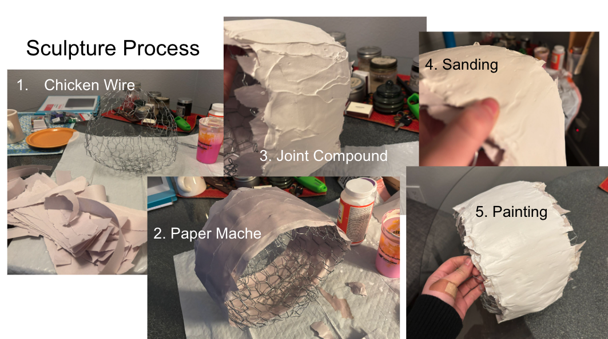
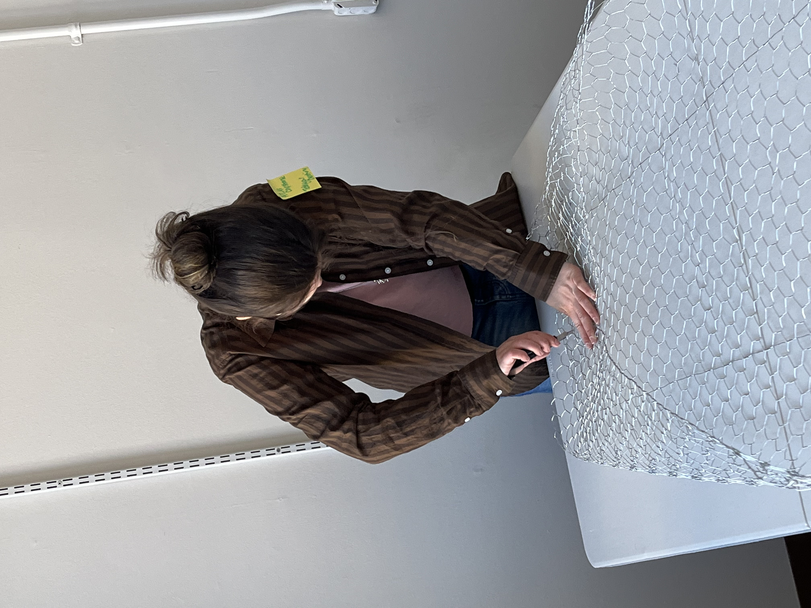
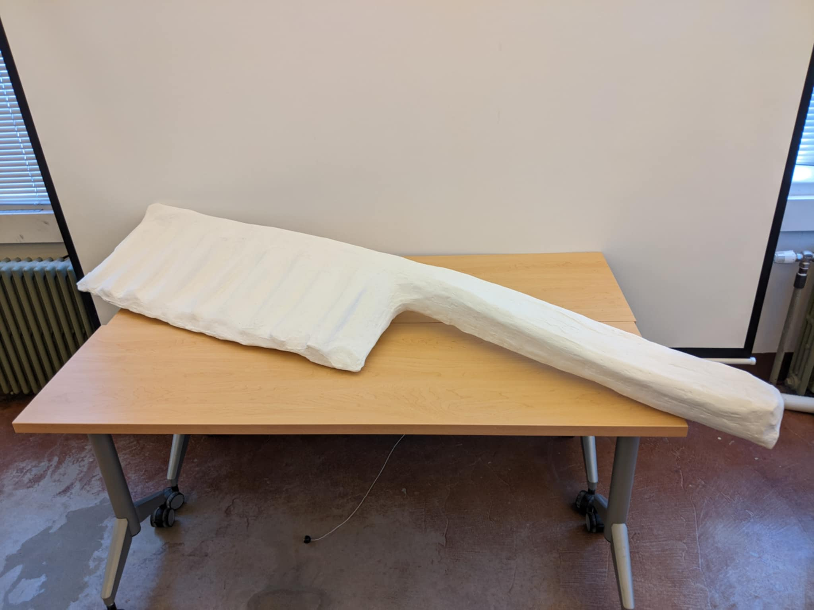
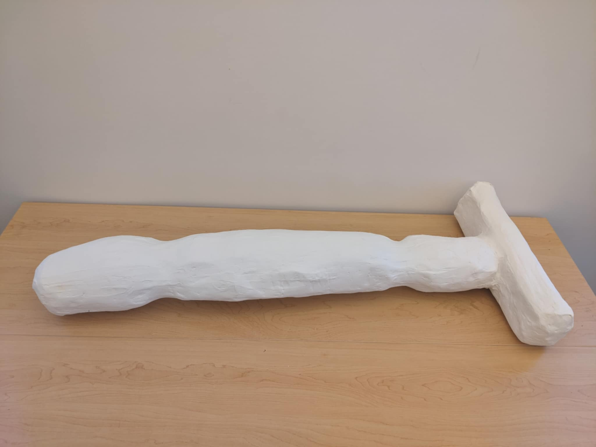
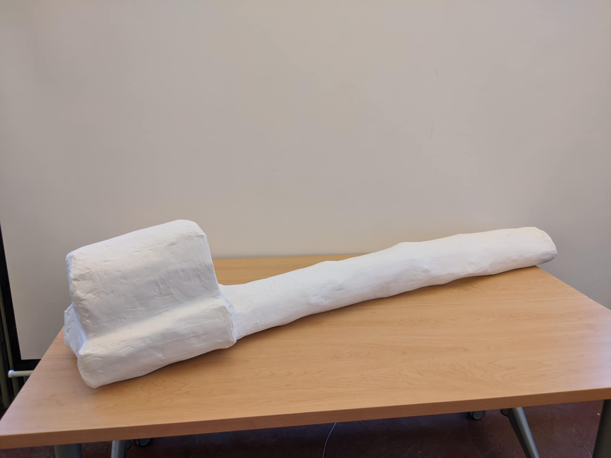
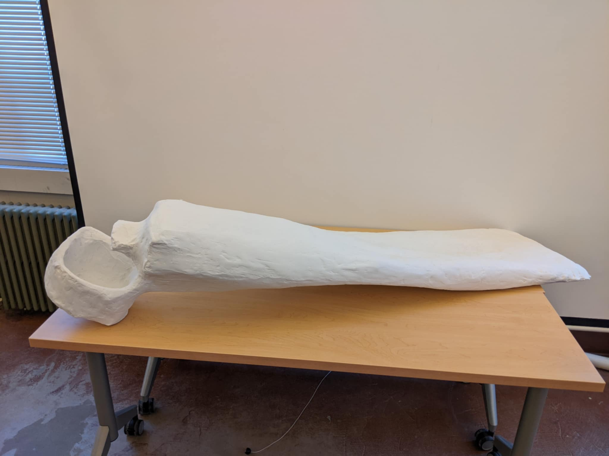
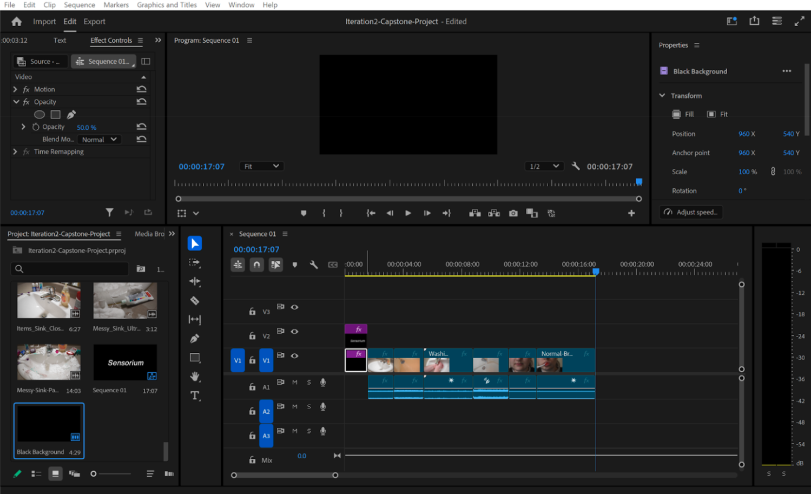
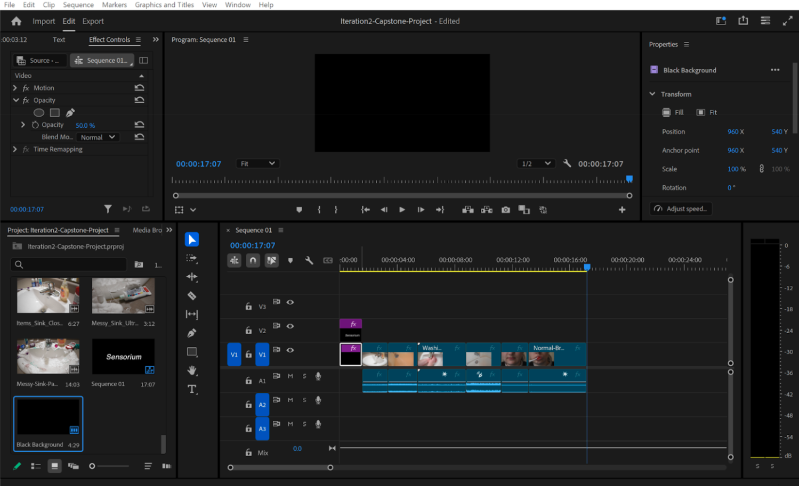
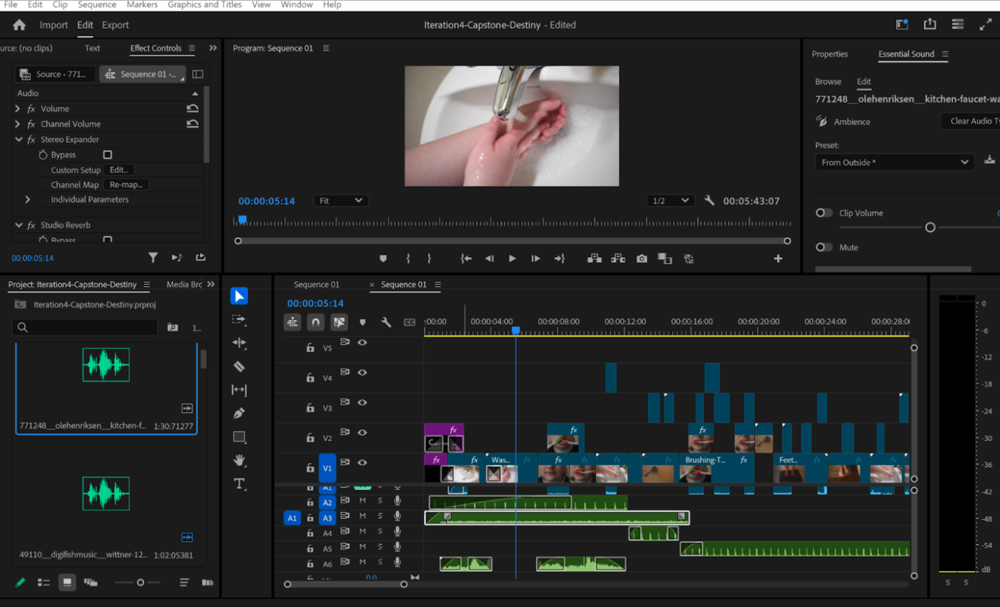
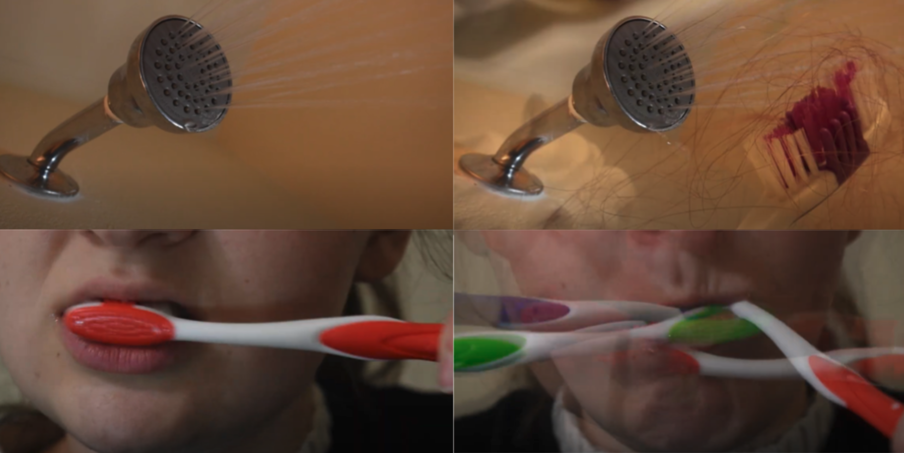

Sensorium
Collaborators: Tehya Laughlin & Destiny Cool
Mentors: Anna Tsouhlarakis, Renee Boos
Faculty: Annie Margaret
Project Overview
Beginning in the Fall of 2024, Destiny Cool and Tehya Laughlin collaborated to create an art installation aimed at expanding the audience's perspective and understanding. Initially focusing on neurodiversity, they decided to utilize sculpture and videography to convey their message. Mentors and faculty provided guidance throughout the project's development.
Sensorium centers on the universal sensory experience of the bathroom. While everyone can relate to this environment, individual thresholds for sensory stimuli vary. The installation heightens auditory and visual senses through rapid cuts, evocative sounds, and immersive projections, evoking emotions ranging from panic to eventual calmness as the experience progresses.
Video Documentation
Sculpture
Weeks 1–3: Testing
Tehya gathered materials and completed a small test sculpture to experiment with the planned processes and materials. She also assisted Destiny in capturing video footage, taking on roles such as director, camera operator, and actor.

Weeks 4–6: Understructure
Tehya constructed the chicken wire understructures for the sculptures and contributed to video production by sourcing free sound samples. Feedback was gathered from mentor Anna Tsouhlarakis during this phase.


Weeks 6–8: Paper Mache
Paper mache was applied over the chicken wire, followed by a Mod Podge hard coat layer for water sealing. A survey was also created to gather feedback on the project.

Weeks 9–10: Joint Compound
Joint compound was applied to the sculptures, and preparations were made for a presentation detailing the project's progress.

Week 11: Sanding and Painting
Final touches included sanding and painting the sculptures white.




Video and Projection
Weeks 1–3: Shooting and Early Post-production
Destiny captured footage based on a storyboard developed with Tehya. An initial low-fidelity video was compiled to structure the story progression and experiment with emotional impact.
 

Weeks 4–6: Clarifying Editing Style
Two additional video iterations were created, incorporating experimental editing and sound integration. Feedback was sought from professionals to assess the installation's impact and relevance.


Weeks 8–11: High Fidelity Video Editing
Final video composition was completed, enhancing the installation's immersive quality.